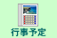
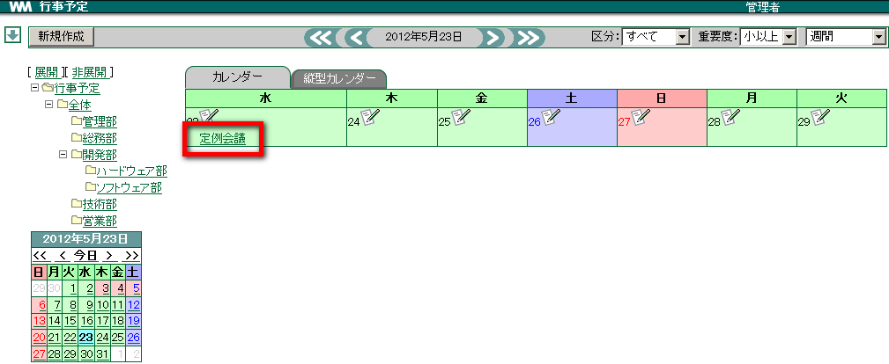
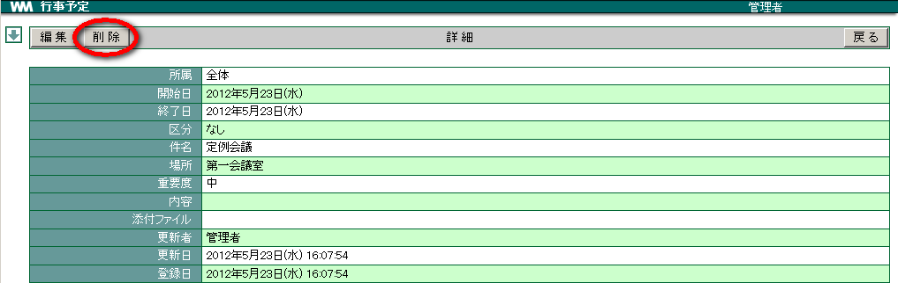

3. 行事予定¶
全体的な行事の予定など、比較的規模の大きなスケジュールを管理できます。
登録時には、行事のタイプ、区分、重要度「大」「中」「小」を設定でき、一覧から絞り込こんで表示できます。
また、一覧のカレンダー表示は通常と縦型を選択することができます。 [1]
3.1. 行事予定を新規に登録する¶
メニューの  をクリックします。
新規作成 をクリックします。

各項目を選択・入力し、 OK をクリックします。


3.3. 登録した予定を編集する¶
メニューの をクリックします。
絞り込みを行いたい場合は、左側のツリーから選択します。

「件名」をクリックします。

編集 をクリックします。

- 内容を編集し、 OK をクリックします。
3.4. 予定を削除する¶
メニューの をクリックします。
絞り込みを行いたい場合は、左側のツリーから選択します。
「件名」をクリックします。
削除 をクリックします。

確認メッセージが表示されたら、 OK をクリックします。
Warning
削除すると元に戻すことはできません。
3.5. 予定をエクスポートする¶
行事予定を CSV ファイルにエクスポートすることができます。

3.6. 予定をインポートする¶
表計算ソフト等で編集した CSV ファイルを取り込むことができます。
インポートは所属ごとに行いますので、CSVファイルを作成する際には所属ごとに作成します。
メニューの をクリックします。
行事予定の右上のコンボボックスより インポート を選択します。

参照 をクリックし、取り込む CSV ファイルを選択します。

インポート対象の所属を選択します。

Note
所属 (カテゴリ) プルダウンには、作成権限以上の所属が表示されます。
3.6.1. CSV ファイルの書き方¶
CSV ファイルを記載する場合は、一度エクスポートを実行した CSV ファイル(event_export.csv) をご参照ください。
脚注
| [1] | 行事予定のカテゴリ作成やアクセス権については 設定画面(管理者) の 行事予定 をご確認ください。 |
| [2] | 行事予定は所属で分類されます。 |
| [3] | 「ヘッダ文字を日本語にする」にチェックを入れると、書き出される項目名を日本語で表示することができます。 |
| [4] | 他人のスケジュールをエクスポートするためには「詳細参照」または「作成」権限が必要です。 |
| [5] | [オプション] の [テストを行う] にチェックをつけて OK ボタンをクリックすると、CSVファイルのテストを行うことができます。(チェックがつけられている場合は、データ登録はされません) |
| [6] | 日本語のヘッダ文字が含まれた CSV データはインポートできません。 |